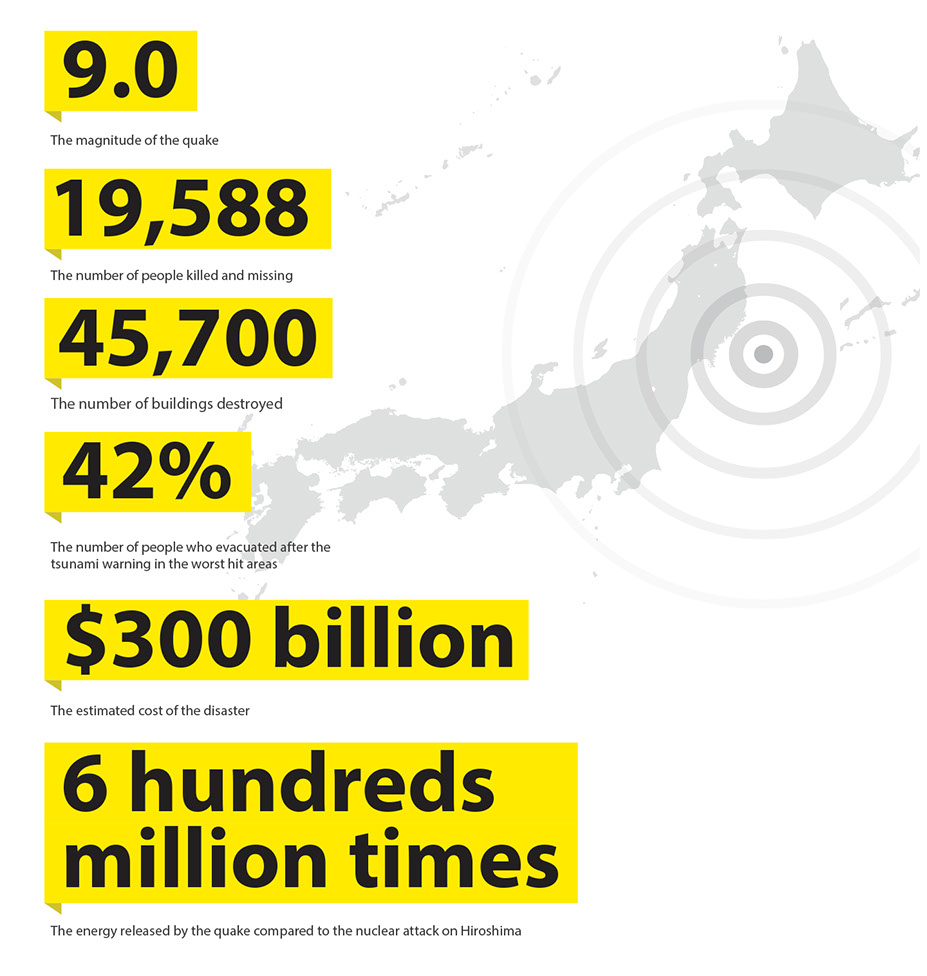
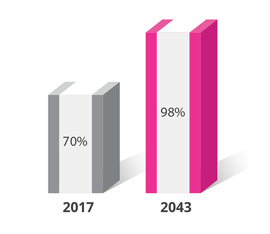
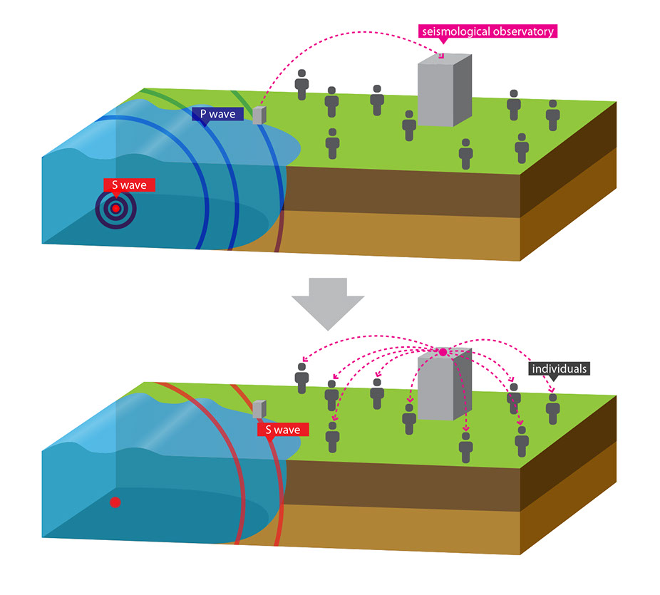
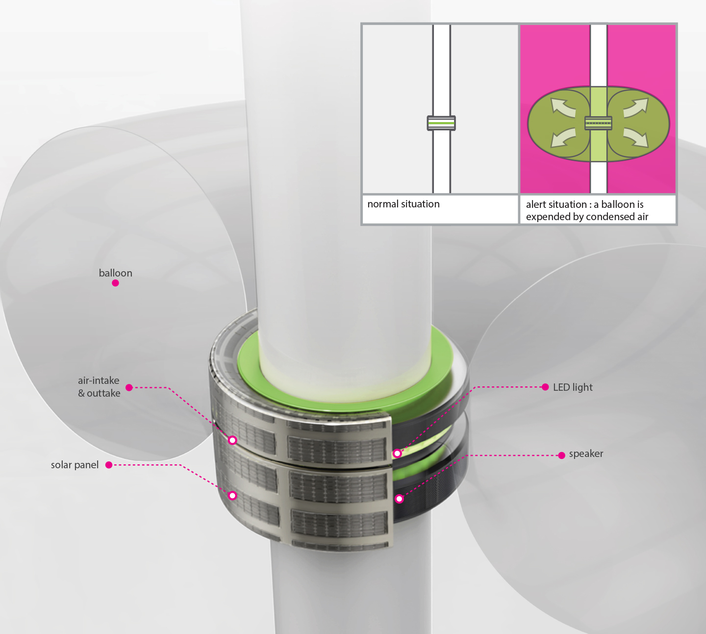

Life-Light
Design for emergency evacuation system
Designers: Jaeyong Lee, Philyoon Kim
Roles: project lead, design research, visual design
In an unexpected disaster situation, the most vulnerable people are those with the most limited ability to respond quickly – senior citizens, the disabled, and foreigners for whom knowledge of the city and its language may be minimal.
Life-Light is automatically activated by the central service system when a disaster warning alert is activated. The system inflates balloons around streetlight poles, which indicate evacuation information and allow people to take a precise and speedy route to a shelter. The dual mode of communication allows the system to be understood by those with visual or hearing impairments. The lack of complex language or lettering also allows foreigners to readily understand it.
Life-Light is a 2013 Red Dot Concept Award: Honourable Mention
Background
In 2011, when the big earthquake (Magnitude 9.0) stroked Japan, I was travelling in Tokyo. Since Tokyo is a city with extremely high density of population, and the roads were very complicated, I did not know where to evacuate when the earthquake actually happened. With this sudden natural disaster, I was very lost and could not find any sign for any emergency shelters. On the top of that, indeed, the language barrier compounded the confusion.
After this personal experience, I started to investigate what are the painpoints of people like me; I call them vulnerable people for emergencies, under the extremely dangerous natural disaster situations.
Design Research
The damages to human life in the 2011 earthquake in Japan reached a total of 19,588 casualties (with 15,828 dead, and 3,760 still missing). It only takes one major earthquake to cause unbelievable damages to individuals in different countries and to nature. The total number of natural disasters has steadily increased over the last 50 years, and many experts believe natural disasters would occur more frequently in the future.
Risk in Tokyo
After the 2011 earthquake in Japan, seismic activity picked up dramatically in Tokyo. In 2012, there has been an average of 1.5 earthquakes every day in the city. Many of these are too weak to be noticeable. Others, such as the January 1, 2012 magnitude 7.0 earthquake at Torishima Island (about 560 kilometers south of Tokyo), shook the capital. These recent seismic events have prompted the University of Tokyo to revise its earthquake predictions for the Tokyo metropolitan area. They now give a 70% chance of a magnitude 7 quake within 4 years. Over the next 30 years, the probability of a Tokyo earthquake (that is over magnitude 7) rises to 98%.
Earthquake warninbg system in Japan
Japan has the most advanced earthquake warning system in the world. High-speed communication and computer systems are designed to be faster than an earthquake's seismic waves. Japan's earthquake warning system has thousands of sensors all over the country, and on the seabed. When an earthquake is detected, it is sent immediately to high-speed computers that can calculate the likely size and location of the earthquake, and send out appropriate warnings. When an earthquake occurs, it is often possible to warn people before it hits populated areas.
 Earthquake warning system in JapanHowever, it is not only hard to send such information to the handicapped or to foreigners who are unfamiliar with these situations and the language, but even the Japanese could face difficulties if they are not aware of the city’s evacuation system and the locations of safe shelters. Although the shelter sign or the warning alarm is flashed on the street, people who cannot understand the contents of the alarm language could be vulnerable when disaster hits. Now, a new, universal disaster alarm system must be established in Japan, so everyone, including foreigners, can proceed to safer grounds.
Painpoints of people who are vulnerable people for emergencies
1. Chaos
In a sudden disaster, the vulnerable to disaster get panic and it’s not easy for them to find any sign showing the location of the shelter in many complicated roads and the environments.
2. Confusion
Even the evacuation broadcasting is on, people such as foreigners, or with visual and auditory disabilities can’t understand where to go.
3. System Paralysis
Due to the paralyzed roads and telecommunications system, the disaster prevention information would be not accessible though the normal routes.
Design Concept
Life-Light is a system designed to be automatically activated by the central process system when the disaster warning alert is on. This system expands the routes of the evacuation information and leads to more precise, safe, and speedy ways to the shelter.
This system is installed in every street lights at an interval of 8m~50m. In the emergency situations, this system shows the direction to the shelter visually and auditory with ‘continuous on-off light’ with the sound alert like a leading light in plane runaway.
Design Features
1. Universe Design
Light and sound movement easily shows the direction rather than complex language or letters. This solution approaches universally covering such as people with visual and auditory disability or foreign residents.
2. Solar Energy
In the day times, the battery is charged by using the city electricity and also solar energy, hence, even when the city electricity is blocked by the disaster, Life-light still continues to provide information.
3. Smart System
Life-light is also a smart system. Such as when the way to the shelter is damaged by any chance, this information is immediately updated and it leads to other closest temporary shelter.
 Structure of Life-LightHow does it work?
Life-Light system in a complex urban areaFinding shelter during an unexpected disaster is not easy to do because there are many signs on the roads, and not all streets are equipped with a shelter sign or a broadcasting system. Life-Light could indicate the safest and closest way to a shelter through the moving signals and sounds installed on the streetlights that can go off in regular intervals even in a complex urban area like Tokyo. People could find the signal wherever in the city because these devices are all connected to each other, and would constantly point to the direction of the shelter on the road. When the Life-Light’s lights are assembled in an intersection, it could prevent confusion as the light and sound would only point to one direction. As people get closer to the shelter, the frequency of the light and sound will increase, helping them recognize their distance to the shelter even if they are foreigners or are visually impaired.